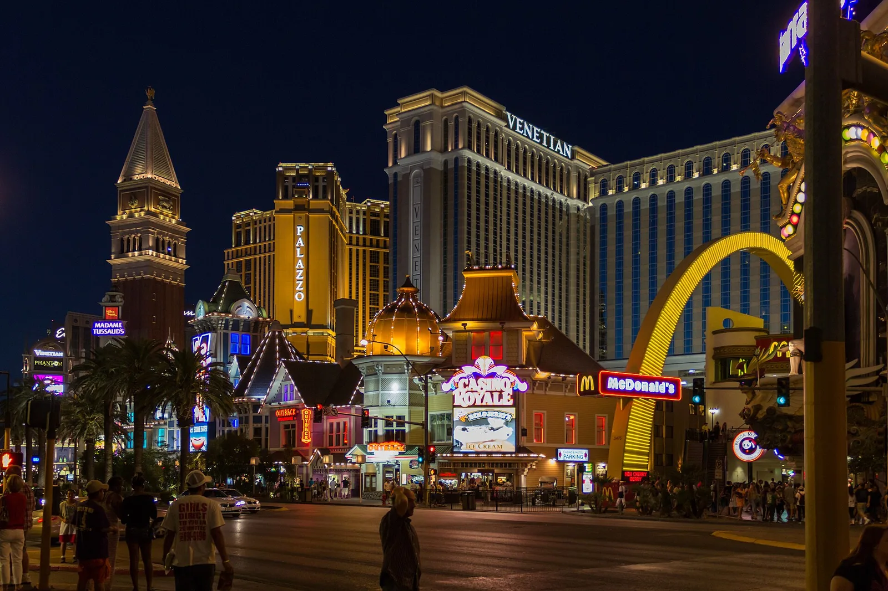
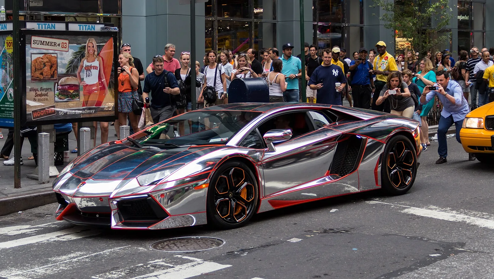
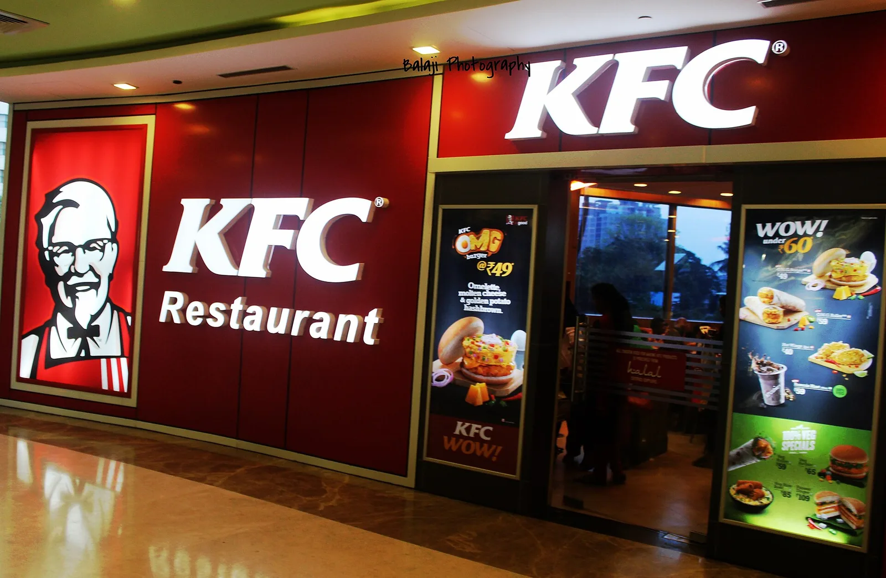
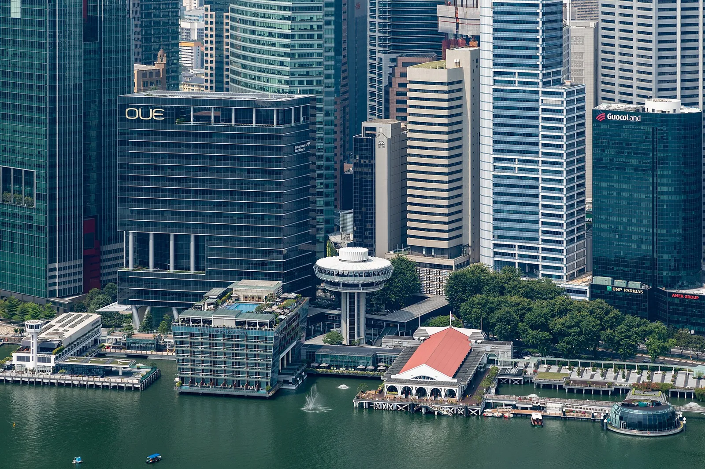
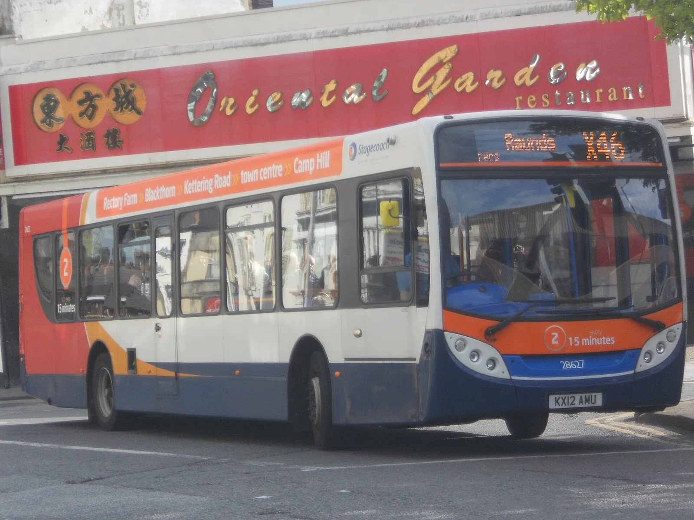
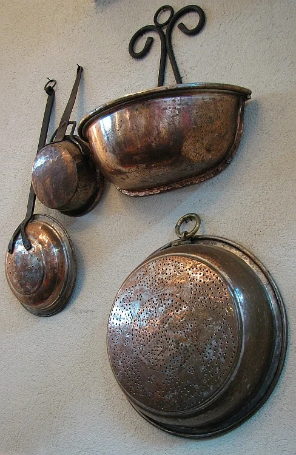

Shop
Storefront architecture ready for verified catalog data.
Explore ↗DINING
Editorial storytelling, collections, product discovery, customer support, trust, and a commerce-ready architecture — without inventing live inventory or prices.



Storefront architecture ready for verified catalog data.
Explore ↗Curated discovery and merchandising structure.
Explore ↗Stories, lookbooks, campaigns, and brand culture.
Explore ↗Wishlist, account, support, shipping, and returns.
Explore ↗A safe handoff to a real payment provider when configured.
Explore ↗Policies, privacy, accessibility, and support.
Explore ↗



RESTAURANT
A restaurant and dining brand for menus, reservations, locations, events, catering, and hospitality storytelling.
Explore the design system ↗
The site includes storefront, catalog, product-detail, cart, wishlist, checkout handoff, shipping, returns, account, and support modules. Live selling stays disabled until verified inventory, pricing, and a real checkout provider are connected.
NEXT STEP
The storefront structure is ready to connect to verified products, inventory, shipping, tax, and a real checkout provider.
REAL MEDIA LAYER
Reusable photography is woven into the hero, galleries, product surfaces, and page art — not only a credits strip.